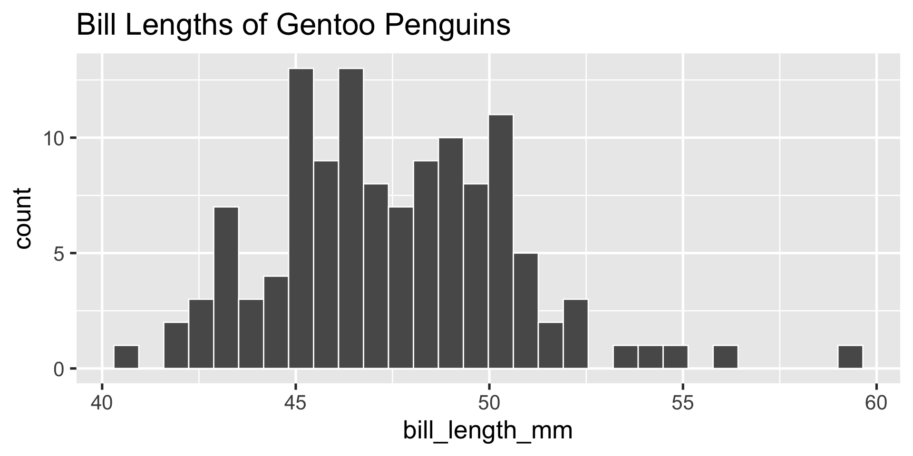
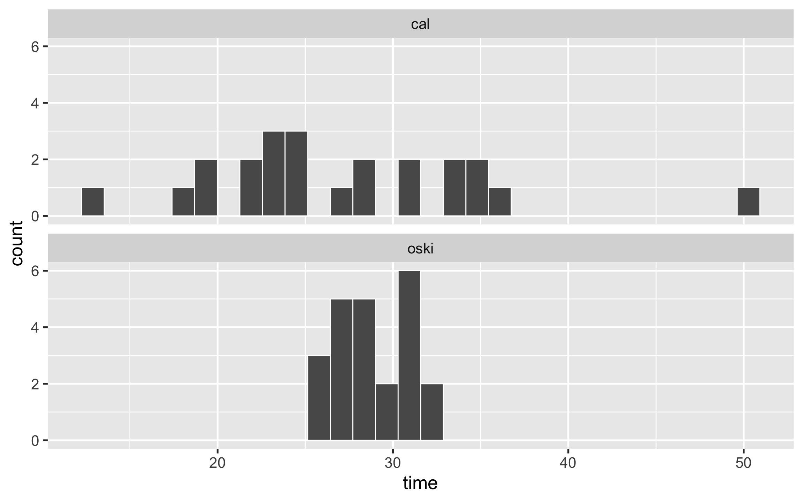
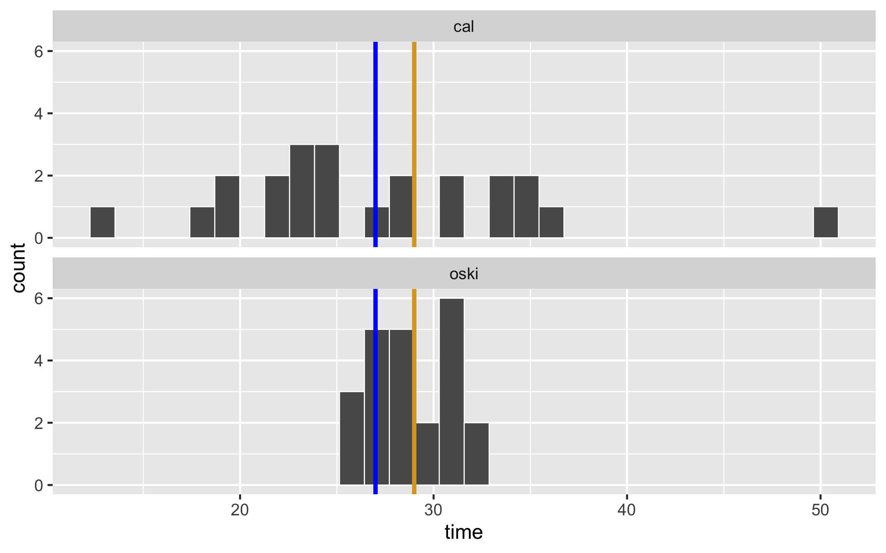

Code
countdown::countdown(1, top = 0)01:00
. . .
. . .
. . .
. . .
Which of these variables do you expect to be uniformly distributed?
Please vote at pollev.com.
countdown::countdown(1, top = 0)01:00

. . .
It depends on your desiderata: the nature of your data and what you seek to capture in your summary.
. . .
Get out a piece of paper. You’ll be watching a 3 minute video that discusses characteristics of a typical human. Note which numerical summaries are used and what for.
. . .
. . .
. . .
. . .
But there are other notions of typical… what about a maximum?
. . .
There are two new food delivery services that open in Berkeley: Oski Eats and Cal Cravings. A friend of yours that took Stat 20 collected data on each and noted that Oski Eats has a mean delivery time of 29 minutes and Cal Cravings a mean delivery time of 27 minutes. Which would would you rather order from?
. . .
countdown::countdown(minutes = 1, top = 0)01:00
set.seed(513)
oski <- rnorm(23, 0, 2)
oski <- oski + (29 - mean(oski))
cal <- rnorm(23, 0, 8)
cal <- cal + (27 - mean(cal))
df <- tibble(service = rep(c("oski", "cal"), each = 23),
time = c(oski, cal))
p1 <- ggplot(df, aes(x = time)) +
geom_histogram(col = "white") +
facet_wrap(vars(service), nrow = 2) +
theme_gray(base_size = 20)
p1
p1 +
geom_vline(xintercept = 27, color = "blue", lty = 1, lwd = 2) +
geom_vline(xintercept = 29, color = "goldenrod", lty = 1, lwd = 2)
Would you still prefer to order from Cal?
Work on the problem set in groups of 2. We will discuss some questions toward the end of the period!
countdown::countdown(minutes = 25, top = 0)25:00
countdown::countdown(minutes = 5, top = 0)05:00
Head to PollEverywhere for a competition!
Work on the lab. We will discuss some questions toward the end of the period!
countdown::countdown(minutes = 30, top = 1)30:00